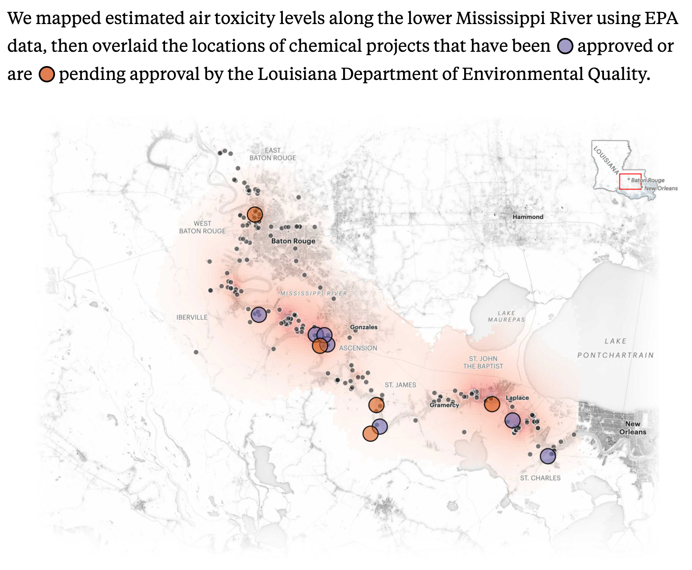

rm(list = ls())Summarizing Data Tutorial - Parish Cancer Rates by Race and Cancer Site
Calculating Cancer Mortality Rates by Race and Cancer Site
In the last tutorial, we created a data frame that included population weighted, age-adjusted cancer mortality rates for parishes in Cancer Alley and parishes in the rest of Louisiana. Today, we’re going to continue to refine our analytic sample by revising list of parishes comprising Cancer Alley and calculating race- and site-specific cancer rates.
With a couple of small exceptions, you have all of the tools you need to make these revisions to the analytic sample. You’ve already used all the commands that you’ll need for this tutorial in previous tutorials and homework assignments. The key here will be how to put those tools to use to get the data to look the way you want it.
I’m going to outline the steps you’ll need to follow to revise the analytic sample and provide a few hints along the way, but much of this will be up to you!
Steps for Completing the Tutorial
Step 1: Create a Markdown document
Let’s start by opening the .Rproj file in your hpam7660_Cancer_Alley folder. Then open a new Markdown document. We’ll want to start fresh for this tutorial rather than continuing to work off of the previous document. We’ll also want to remove any existing data frames from our global environment so that we’re not confusing new data for old data. Run the following command to clear your environment:
Step 2: Load packages
In the past tutorials, we’ve been loading individual packages like dplyr, reader, etc. It turns out that the tidyverse package contains all of these individual packages and more. So, when you go to load the packages for this tutorial, you can simply load the tidyverse package and the knitr package and they will include all of the packages needed.
Step 3: Read in the data
For this tutorial, you’ll need the la_mort data, the la_pop data, and the stnrd_pop data. You can use the code below to load these files:
la_mort <-
read_csv("https://www.dropbox.com/scl/fi/fzsnhfd3lq80v2o3sag6c/la_mort.csv?rlkey=h1vyjm2b8ppgejgsg3e8evm7i&dl=1")
la_pop <-
read_csv("https://www.dropbox.com/scl/fi/650k1obpczky6bwa19ex6/la_county_pop.csv?rlkey=0aokd9m76q7mxwus97uslsx7g&dl=1")
stnrd_pop <-
read_csv("https://www.dropbox.com/scl/fi/xzd2o5lza237so6vamqwb/stnrd_pop.csv?rlkey=zp90au2tuq6eptvi1yiyjfzua&dl=1")Step 4: Define Cancer Alley Parishes
We’ve done this previously using the traditional definition of Cancer Alley parishes, but a recent mapping of air toxicity shows that high levels of airborne carcinogens are concentrated among a subset of the Cancer Alley parishes:
 Source:ProPublica
Those parishes are:
- 5 - Ascension
- 47 - Iberville
- 89 - St. Charles
- 93 - St. James
- 95 - St. John the Baptist
- 121 - West Baton Rouge
Create a variable that is equal to 1 if a decedent’s parish of residence was one of these refined Cancer Alley parish and 0 otherwise.
Step 5: Define Cancer Deaths by Cancer Site
Use the ucr39 variable in the la_mort file to define deaths from the following cancer types:
- stomach, ucr39 == 5
- colon, ucr39 == 6
- pancreas, ucr39 == 7
- lung, ucr39 == 8
- breast, ucr39 == 9
- cervix, ucr39 == 10
- prostate, ucr39 == 11
- bladder, ucr39 == 12
- lymphoma, ucr39 == 13
- leukemia, ucr39 == 14
- other_site, ucr39 == 15
- total, ucr39 5:15
Step 6: Adjust Age Groupings
Remove anyone whose age is coded as “9999”, define the age break groupings and the corresponding labels, and use the cut() function to create the age groupings. (Hint: we completed this exact same step in the previous tutorial.)
Step 7: Define Race in the Mortality File
Because Louisiana’s population is 90%+ non-Hispanic Black and non-Hispanic white, these are really the only two race categories for which we’ll be able to calculate accurate cancer mortality rates at the parish level. First, filter the data frame so that you only retain Black and white decedents (Hint: you can use the racer5 variable where values of 1 indicate a white decedent and values of 2 indicate a Black decedent.)
Next create a variable called black that is an indicator for a Black decedent (e.g., this variable will equal 1 for a Black decedent and 0 for a white decedent). Alternately, you could define an indicator for white race instead of Black race, but we’ll end up with the same results in the end either way.
Step 8: Create Parish Counts of Cancer Deaths by Cancer Site and by Race
Take the data frame you used in the previous step and sum cancer deaths by site and by race for each parish in the data. (Hint: to accomplish this, you’ll use the group_by and summarize functions.)
Step 9: Define Race in the Population File
Now you’ll need to calculate population values by age groupings for Black and white people in Louisiana using the la_pop file. This get’s a little tricky, so I’m providing you with the code you’ll need to do this.
la_pop <- la_pop %>%
mutate(
black_pop = rowSums(select(., c("ba_male", "ba_female"))),
white_pop = rowSums(select(., c("wa_male", "wa_female"))),
)
la_pop_black <- select(la_pop, county, year, agegrp, black_pop)
la_pop_white <- select(la_pop, county, year, agegrp, white_pop)One important thing to note about this code chunk is that it creates two separate data frames: one called la_pop_black that contains population data for Black people in Louisiana and one called la_pop_white that contains population data for white people in Louisiana.
Step 10: Join the Mortality and Population Data Frames
Here’s another tricky step. The reason this is tricky is because we needed to create two separate data frames for population values and so we’ll want to join these data frames to the race-specific mortality data.
First, create a data frame called la_joined_black that filters or subsets your data frame from Step 8 so that it only includes Black decedents and use an inner_join to join this data frame to the la_pop_black data frame from Step 9. Do the same thing for white decedents.
Once you have these two data frames, you’re going to want to stack them together. In R, stacking two data frames is done using the rbind function (FYI…STATA calls this an append, SQL calls this a union, and R calls this a bind, I have no idea why we can’t settle on one naming convention for stacking!). It’s also important that the data frames you’re trying to bind have the same column titles. This is not the case with the la_pop_black and la_pop_white data frames because one has a column called black_pop and the other has a column called white_pop. You’ll want to use the rename function to change both of these column names to something like population. Be sure to do this before attempting the bind.
Here’s the syntax for rbind:
la_bind <- rbind(la_joined_black, la_joined_white)Step 11: Join the Mortality/Population Data to the Standard Population Data
We now need to join the standard population data so that we can age-adjust our mortality rates. Nothing too tricky here, just join on agegrp like you did in the last tutorial. Note that we’re not using race-specific standard populations, but instead using the full population distribution of the U.S. in 2000.
Step 12: Calculate Population Weights
Again, this is done exactly the same way we did it in the previous tutorial. No changes needed here.
Step 13: Calculate Cancer Mortality Rates by Cancer Site and Race
When we calculated cancer mortality rates in the last tutorial, we used the following code:
df$cancer_rate_adj <- ((df$cancer39) / (df$tot_pop / 100000)) * df$stnrd_pop_weightWhere we calculated a variable called cancer_rate_adj that was equal to the sum of cancer deaths (from all sites and all race/ethnicities) divided by the total population (which was scaled by 100,000) and then we multiplied this by the standard population weight. We want to do the same thing here, but we want the cancer mortality rates we calculate to be specific to cancer site and race. (Hint: the data frame already contains separate rows for Black and white decedents, so we don’t need to make any additional accommodation to calculate race-specific rates. You can simply alter the line of code above so that it reflects a particular cancer site and then include a line for each cancer site - DON’T FORGET TO CALCULATE THE TOTAL RATE.)
Once you get this far in Step 13 you might see something strange if you look at the data. A couple of cells will contain a value that says “inf”. This happens when the number of cancer deaths is greater than 0, but the age-race population is 0. You have to remember that the population numbers are estimates. So in sparsely populated parishes, the Census might estimate 0 Black people between the ages of 80 and 84 (for example), but the mortality data (which are not estimates) tell us that at least 1 Black person in that age range did in fact die of cancer in that parish.
Since this only happens a couple of times and we’re weighting by population anyway, you can run the following code that will essentially drop any cases where a cell value is “inf”. Remember to replace df with the actual name of your data frame.
for (col in names(df)) {
df[[col]][is.infinite(df[[col]])] <- NA
}Step 14: Aggregate to the Parish-Year Level
In the last tutorial, we used the following code to aggregate our data to the parish-year level:
parish_rates <- la_joined_stnrd %>%
group_by(cntyrsd, cancer_parish, year) %>%
summarize(cancer_rate_adj = sum(cancer_rate_adj, na.rm = TRUE), tot_pop = sum(tot_pop))Notice that this grouped by county, the indicator for a Cancer Alley parish, and year. We want to do the same thing here, but we now have an extra grouping variable, black. We also only calculated total cancer mortality rates in the previous tutorial, whereas this time, we want to calculate total rates and rates by site. Make the necessary adjustments to the code above.
Step 15: Weight by Parish Population
Now that we have age-adjusted cancer mortality rates, we want to weight by parish population so that more populous parishes receive more weight in the aggregate Cancer Ally vs. non-Cancer Alley rates. Again, we did a version of this in the last tutorial using the following code:
parish_rates$pop_weight <- (parish_rates$cancer_rate_adj) * (parish_rates$tot_pop)You can do the same thing here, but make sure you calculate site-specific measures.
Step 16: Aggregate to Cancer Alley and non-Cancer Alley Parishes
If you’ve made it this far, you’re almost done. This is the last step! Here we’re taking our parish-year level measures of cancer mortality rates and aggregating them into two groups: rates for Cancer Alley parishes (for Black and white people) and rates for non-Cancer Alley parishes (for Black and white people). In the previous tutorial, we used this code for the aggregation:
cancer_alley_rates <- parish_rates %>%
group_by(cancer_parish, year) %>%
summarize(cancer_rate_adj_wt = sum(pop_weight) / sum(tot_pop))You need to modify this code so that you’re aggregating by the black indicator and across all cancer sites. Once you’ve done that you’re finished. Next time, we’ll (mostly) wrap up the Cancer Alley work by exploring visualizations that attempt to tell a descriptive story of differences in cancer mortality between Cancer Alley parishes and the rest of Louisiana.
Be sure to save your Markdown file and push the file to your hpam7660_Cancer_Alley GitHub repo.